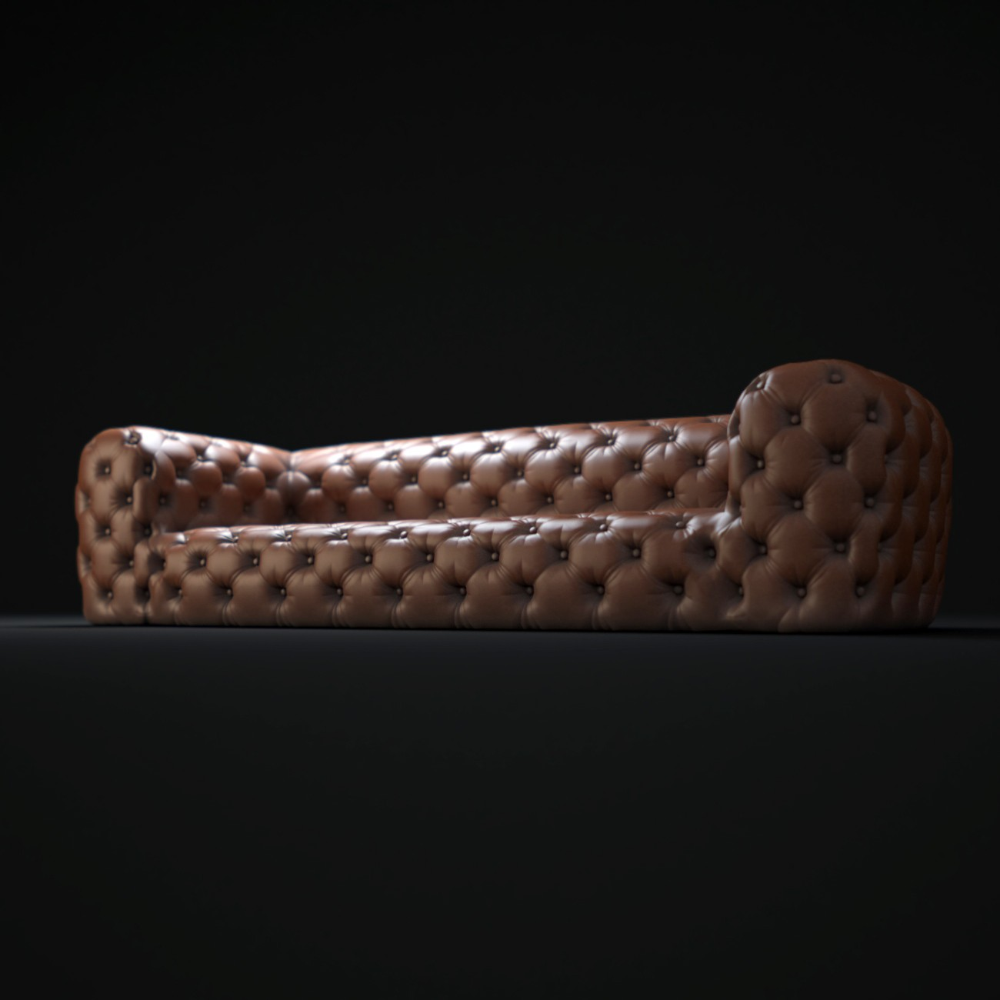
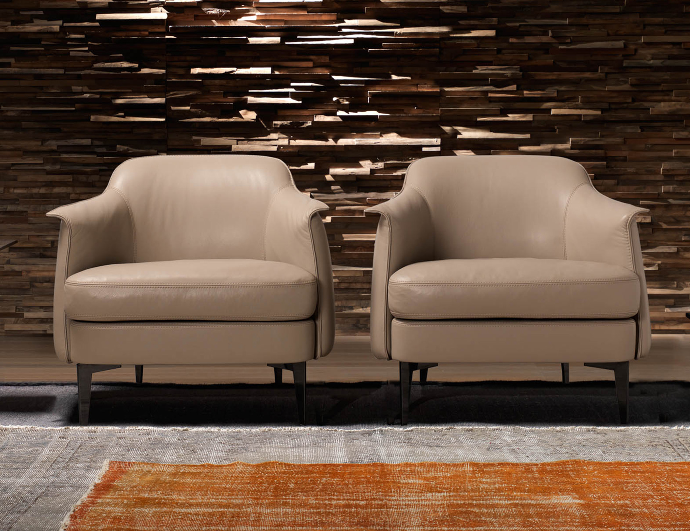
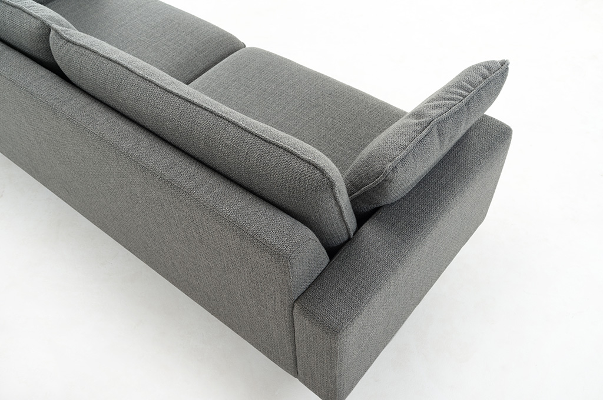

Sofos lovos | Minkšti baldai | Sofa lova | Svetainės baldai
2020.10.27 08:16
Menu Meniu ≡ ╳ Pradžia Baldai Užsakomi baldai Svetainės baldai Foteliai Medžiaginiai minkšti kampai Minkštų baldų komplektai Odiniai kampai Sofos lovos Miegamojo baldai Čiužiniai Miegamojo lovos Pufai Valgomojo baldai Kėdės Stalai Korpusiniai baldai Komodos Spintos Staliukai Virtuvės baldai Katalogai Softaly aek DESIGN Steinfohh Natuzzi Editions Montavimo instrukcijos EURO TISCHE Apie mus Kita informacija Pristatymas Baldų priežiūros instrukcija Baldų garantija Kontaktai Kareivių g. 2a, Vilnius +370 600 04 006 Paskyra Prisijungti / Registruotis
Pamiršote slaptažodį?
Įsiminta (0) Mokėti Meniu ≡ ╳ Pradžia Baldai Užsakomi baldai Svetainės baldai Foteliai Medžiaginiai minkšti kampai Minkštų baldų komplektai Odiniai kampai Sofos lovos Miegamojo baldai Čiužiniai Miegamojo lovos Pufai Valgomojo baldai Kėdės Stalai Korpusiniai baldai Komodos Spintos Staliukai Virtuvės baldai Katalogai Softaly aek DESIGN Steinfohh Natuzzi Editions Montavimo instrukcijos EURO TISCHE Apie mus Kita informacija Pristatymas Baldų priežiūros instrukcija Baldų garantija Kontaktai 0Sofos lovos
Pradžia / Svetainės baldai / Sofos lovosPrekių kategorijos
Korpusiniai baldai Komodos Spintos Svetainės modulinės sistemos Virtuvės baldai Miegamojo baldai Čiužiniai Miegamojo lovos Pufai Svetainės baldai Foteliai Medžiaginiai minkšti kampai Minkštų baldų komplektai Odiniai kampai Sofos lovos Staliukai Uncategorized Užsakomi baldai Baro kėdės Baro pufai Daiktadėžė Durys Foteliai Indaujos Kėdės Kėdės su ratukais Knygų lentynos Komodos Lagaminai Lovos Pagalvės Pufai Rašomieji Stalai Skalbinių spintos Skiriamosios sienos Sofos Spintos Stalai Staliukai Suoliukai Tv spintelė vaikubaldai Valgomojo kėdės Valgomojo Stalai Virtuvės Valgomojo baldai Kėdės StalaiPrekių paieška
Filtruoti pagal kainą
Sofos lovos – vienas populiariausių pirkinių tarp naujakurių ar naują būstą įsigijusių šeimų. Neverta stebėtis, kodėl – sofa lova yra savo funkcionalumu, o tuo pačiu ji gali idealiai papildyti bendrą kambario interjerą. Jeigu dieną jūsų svetainės baldai sutalpina grupę svečių, tai naktį jie puikiausiai gali priglausti tiek šeimos narį, tiek nakvoti likusius draugus. Tik jūs ir galite žinoti, jog šie minkšti baldai turi ir papildomą funkciją!
Rodoma 1–12 iš 27
Į krepšelį Įsiminta Įsiminta ĮsimintaBig sofa Okey
899.00 € Big sofa Okey. Audinys pairenkamas Išmatavimai: ilgis 204 cm. Plotis 103 cm. Aukštis 74cm. Miegamos dalies plotis 145x190cm Jeigu Jums nepatinka medžiaginiai baldai ir ieškote natūralios odos baldų, paspausti šią nuorodą: https://www.rivjera.lt/kategorijos/svetaines-baldai/odiniai-kampai/ Jei neradote Jums patinkančio modelio mūsų baldų salonuose maloniai kviečiame prisijungti prie mūsų internetinės parduotuvės: https://www.rivjerosbaldai.lt Visas prekes turime savo Į krepšelį Įsiminta Įsiminta Įsiminta Į krepšelį Įsiminta Įsiminta ĮsimintaChesterfield trivietė sofa (pasirenkamos spalvos)
799.00 € Chesterfield trivietė sofa (pasirenkamos spalvos). Patogi sėdėjimui medžiaginė sofa. Spalva: pasirenkamos iš plačios audinių paletės. Išmatavimai: ilgis – 215 cm. Lengvai valoma ir prižiūrima medžiaga. Klasikinio dizaino sofa , kuri tiks net išrankiausiems klientams. Chesterfield trivietė sofa pagaminimui reikia ypač daug rankinio darbo, todėl šis baldas taps išskirtine interjero detale Į krepšelį Įsiminta Įsiminta Įsiminta Akcija ! Į krepšelį Įsiminta Įsiminta ĮsimintaEko odos sofa su miegama funkcija
499.00 € 179.00 € Eko odos sofa. Su miegamaja funkcija. Spalva:juoda. Išmatavimai:ilgis: 185 cm bendras plotis: 75cm Miegamos dalies plotas: 120/185cm Kaina 399 eur. www.rivjera.lt Į krepšelį Įsiminta Įsiminta Įsiminta Išparduota Daugiau Įsiminta Įsiminta ĮsimintaIšskleidžiama sofa pastoviam miegojimui
899.00 € Išskleidžiama sofa lova pastoviam patogiam miegojimui. Spalva: pilka Jeigu Jums nepatinka dirbtinės odos baldai ir ieškote natūralios odos baldų, paspausti šią nuorodą: https://www.rivjera.lt/kategorijos/svetaines-baldai/odiniai-kampai/ Jei neradote Jums patinkančio modelio mūsų baldų salonuose maloniai kviečiame prisijungti prie mūsų internetinės parduotuvės: https://www.rivjerosbaldai.lt Visas prekes turime savo sandėlyje Vokietijoje, todėl prekės Jus pasieks per labai trumpą laiką. Prekes Daugiau Įsiminta Įsiminta Įsiminta Į krepšelį Įsiminta Įsiminta ĮsimintaKlasikinė Chesterfield sofa
899.00 € Klasikinė Chesterfield sofa. Ilgis 170cm., plotis 85cm. Kaina 899€ Į krepšelį Įsiminta Įsiminta Įsiminta Į krepšelį Įsiminta Įsiminta ĮsimintaKlasikinė sofutė Jūsų interjerui papuošti
249.00 € Klasikinė sofutė Jūsų namų interjerui. Ilgis 140cm, plotis 65cm, aukštis 75cm. Galima rinktis gobeleną. Jei neradote Jums patinkančio modelio mūsų baldų salonuose maloniai kviečiame prisijungti prie mūsų internetinės parduotuvės: https://www.rivjerosbaldai.lt Visas prekes turime savo sandėlyje Vokietijoje, todėl prekės Jus pasieks per labai trumpą laiką. Prekes galėsite atsiimti mūsų baldų salonuose arba Į krepšelį Įsiminta Įsiminta Įsiminta Išparduota Daugiau Įsiminta Įsiminta ĮsimintaMedžiaginė sofa su miegojimo funkcija 1217031
249.00 € Medžiaginė sofa su miegojimo funkcija. Kaina 249€ www.rivjera.lt Daugiau Įsiminta Įsiminta Įsiminta Išparduota Daugiau Įsiminta Įsiminta ĮsimintaNatūralios odos Chesterfield sofa
999.00 € Natūralios odos Chesterfield sofa. Spalva: Ruda. Ilgis 230cm. Plotis 87cm. Daugiau Įsiminta Įsiminta Įsiminta Į krepšelį Įsiminta Įsiminta ĮsimintaNatūralios odos sofa C115
999.00 € Natūralios odos sofa C115. Ilgis: 170 cm. Plotis: 93 cm. Natūrali oda. Spalva: juoda. Jei neradote Jums patinkančio modelio mūsų baldų salonuose maloniai kviečiame prisijungti prie mūsų internetinės parduotuvės: https://www.rivjerosbaldai.lt Visas prekes turime savo sandėlyje Vokietijoje, todėl prekės Jus pasieks per labai trumpą laiką. Prekes galėsite atsiimti mūsų baldų salonuose arba Į krepšelį Įsiminta Įsiminta Įsiminta Į krepšelį Įsiminta Įsiminta ĮsimintaOdinė sofa 2-500
999.00 € Natūrali oda. Spalva:balta. Ilgis: 170 cm Aukštis: 90 cm Plotis: 95 cm Į krepšelį Įsiminta Įsiminta Įsiminta Į krepšelį Įsiminta Įsiminta ĮsimintaOdinė sofa Savona su miegama funkcija
799.00 € Odinė sofa Savona. Spalva: juoda Kaina 799 eur. Ilgis: 195cm. Į krepšelį Įsiminta Įsiminta Įsiminta Į krepšelį Įsiminta Įsiminta ĮsimintaOdinė sofa su 3 elektriniais reglaineriais
2,499.00 € Odinė sofa su 3 elektriniais reglaineriais. Sofos išmatavimai: 250 cm. Tačiau sofa yra modeliuojama ir gali būti, kokio tik Jums reikia ilgio. Platus natūralios odos arba audinių pasirinkimas. Odinė sofa su 3 elektriniais reglaineriais turi sensorinius jutiklius ypatingai patogiam ,,relax“ funkcijos įjungimui. 3 reglaineriai užtikrina kiekvienam šeimos nariui patogumą ir aukštą Į krepšelį Įsiminta Įsiminta Įsiminta 1 2 3 Next Load moreLoading
No Products for load
Kareivių g. 2a, Vilnius
Savanorių pr. 280, Kaunas
Kauno g. 55, Pagirių km., Kauno raj.
Vilniaus Salonas
Kareivių g. 2a, Vilnius Darbo laikasI–V 11:00 – 18:00
VI 11:00 – 15:00 +370 600 04006 milda@rivjera.lt
Kauno Salonas
Savanorių pr. 280, Kaunas Darbo laikasI–V 10:00 – 18:00
VI 10:00 – 15:00 +370 685 52911 rivjerabaldai@rivjera.lt
Kauno raj. Salonas
Kauno g. 55, Pagirių km., Garliavos apl. Sen., Kauno raj. Darbo laikas individualus.Pusvalandį prieš atvykstant paskambinti vienu iš nurodytu telefono numeriu. +370 683 07700 rivjerabaldai@gmail.com
Rekvizitai
UAB „Rivjeros baldai“ Įmonės kodas: 134043365 PVM mok. Kodas: LT340433610 Sąskaitos nr. LT75 7044 0600 0806 8857Svetainės medis
Pradžia Krepšelis (0) Įsiminta (0) Prisijungti Krepšelis UždarytiKrepšelyje nėra produktų.
- Sofos gera kaina ir nemokamu pristatymu | Baldai1.lt
- Sofos ir foteliai - IKEA
- SOFOS SU MIEGAMAIS MECHANIZMAIS | sofapigu.lt
- Sofos lovos | Minkšti baldai | Sofa lova | Svetainės baldai
- Sofos-lovos - IKEA
- Sofos | Baldoteka
- Sofos lovos. Sofos Internetu pigiau Žema kaina | b-a.eu
- Minkštos sofos-lovos | Baltarusiški baldai - MIRIZA
- Sofos lovos internetu - YKAbaldai.lt
- Sofa-lova Austėja - BALDAI.com
- Sofos gera kaina ir nemokamu pristatymu | Baldai1.lt
Sofos lovos internetu. Sofa-lova – pats praktiškiausias ir funkcionaliausias baldas Jūsų buto ar namo erdvei. Šie baldai populiarūs dėl to, kad šiuolaikiniai sofos-lovos modeliai turi svarbią funkciją – jie lengvai transformuojasi į miegamą lovą ir yra nepakeičiami buityje.
- Sofos ir foteliai - IKEA
Rinkis svajonių sofą čia! Platus sofų, sofų-lovų, kampinių sofų, fotelių ir kitų baldų pasirinkimas. Nemokamas pristatymas, užnešimas ir surinkimas visoje Lietuvoje. Nemokamas audinių siuntimas į namus. Pirkimas išsimokėtinai. Aukšta kokybė ir išskirtinis dizainas. Garantijos nuo 2 iki 10 metų. Patirtis nuo 2013 metų
- SOFOS SU MIEGAMAIS MECHANIZMAIS | sofapigu.lt
kampinė sofa-lova su patalynės dėže. 151x66 cm tamsiai pilka. Ankstesnė kaina 379 € 349 € ...
- Sofos lovos | Minkšti baldai | Sofa lova | Svetainės baldai
Sofa-lova Austėja: Baldas miegamas, yra patalynės dėžė. Išmatavimai – 2,28 x 1,00., miegama dalis – 1,95 x 1,30 m. Pagaminta Lietuvoje. Turi...
- Sofos-lovos - IKEA
365 dienų grąžinimo garantija. Jei nesate 100% patenkinti savo kokybiška preke, ją galite grąžinti per 365 kalendorines dienas.
- Sofos | Baldoteka
Mes naudojame slapukus, kurie užtikrina, kad Jums bus patogu naudotis tinklalapiu. Jei toliau naršysite mūsų tinklalapyje, tai tolygu Jūsų sutikimui su slapukų naudojimu.
- Sofos lovos. Sofos Internetu pigiau Žema kaina | b-a.eu
Prekiaujame Skandinavijos rinkai skirtais, modernaus dizaino, skandinaviško stiliaus ir aukštos kokybės baldais. Pas mus galite įsigyti sofų, lovų, kėdžių, stalų ir kitų baldų.
- Minkštos sofos-lovos | Baltarusiški baldai - MIRIZA
Klasikinių ir modernių baldų gamintojai. Baldų ekspozicija: Vilniaus g. 14, Prienai Tel.: 8 698 83301 El. paštas: info@sofasofa.lt
- Sofos lovos internetu - YKAbaldai.lt
Sofa – Vienas didžiausių pirkinių Jūsų namuose. Tuo pačiu tai taip pat ir vienas svarbiausių. Jei jūsų svetainė erdvi, jums reiks nuspręsti, kiek vietos norite skirti sofai. Jei ieškote minkštos dalies, kuri taps pagrindiniu Jūsų svetainės akcentu, ieškokite apvalių formų baldo, kuris užims šiek tiek daugiau erdvės, bet ...
- Sofa-lova Austėja - BALDAI.com
Jei jūsų sofa linkusi dažnai teptis, galite rinktis laukui skirtus apmušalus – jie kur kas atsparesni skysčiams bei purvui. Be to, tokie apmušalai mažiau blunka nuo saulės (ypač aktualu, jei sofą statysite prie apšviesto lango). Nemaža dalis lauko baldų yra tokio universalaus dizaino, kad puikiai dera ir uždaroje erdvėje.
Sofos lovos internetu. Sofa-lova – pats praktiškiausias ir funkcionaliausias baldas Jūsų buto ar namo erdvei. Šie baldai populiarūs dėl to, kad šiuolaikiniai sofos-lovos modeliai turi svarbią funkciją – jie lengvai transformuojasi į miegamą lovą ir yra nepakeičiami buityje.
Rinkis svajonių sofą čia! Platus sofų, sofų-lovų, kampinių sofų, fotelių ir kitų baldų pasirinkimas. Nemokamas pristatymas, užnešimas ir surinkimas visoje Lietuvoje. Nemokamas audinių siuntimas į namus. Pirkimas išsimokėtinai. Aukšta kokybė ir išskirtinis dizainas. Garantijos nuo 2 iki 10 metų. Patirtis nuo 2013 metų
kampinė sofa-lova su patalynės dėže. 151x66 cm tamsiai pilka. Ankstesnė kaina 379 € 349 € ...
Sofa-lova Austėja: Baldas miegamas, yra patalynės dėžė. Išmatavimai – 2,28 x 1,00., miegama dalis – 1,95 x 1,30 m. Pagaminta Lietuvoje. Turi...
365 dienų grąžinimo garantija. Jei nesate 100% patenkinti savo kokybiška preke, ją galite grąžinti per 365 kalendorines dienas.
Mes naudojame slapukus, kurie užtikrina, kad Jums bus patogu naudotis tinklalapiu. Jei toliau naršysite mūsų tinklalapyje, tai tolygu Jūsų sutikimui su slapukų naudojimu.
Prekiaujame Skandinavijos rinkai skirtais, modernaus dizaino, skandinaviško stiliaus ir aukštos kokybės baldais. Pas mus galite įsigyti sofų, lovų, kėdžių, stalų ir kitų baldų.
Klasikinių ir modernių baldų gamintojai. Baldų ekspozicija: Vilniaus g. 14, Prienai Tel.: 8 698 83301 El. paštas: info@sofasofa.lt
Sofa – Vienas didžiausių pirkinių Jūsų namuose. Tuo pačiu tai taip pat ir vienas svarbiausių. Jei jūsų svetainė erdvi, jums reiks nuspręsti, kiek vietos norite skirti sofai. Jei ieškote minkštos dalies, kuri taps pagrindiniu Jūsų svetainės akcentu, ieškokite apvalių formų baldo, kuris užims šiek tiek daugiau erdvės, bet ...
Jei jūsų sofa linkusi dažnai teptis, galite rinktis laukui skirtus apmušalus – jie kur kas atsparesni skysčiams bei purvui. Be to, tokie apmušalai mažiau blunka nuo saulės (ypač aktualu, jei sofą statysite prie apšviesto lango). Nemaža dalis lauko baldų yra tokio universalaus dizaino, kad puikiai dera ir uždaroje erdvėje.
  